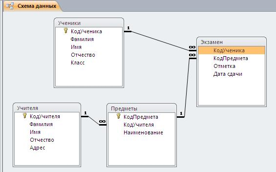
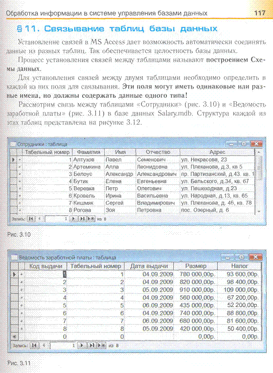
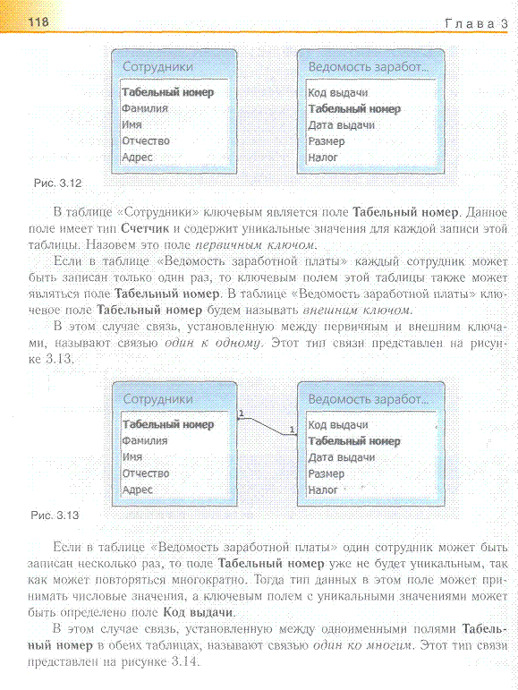
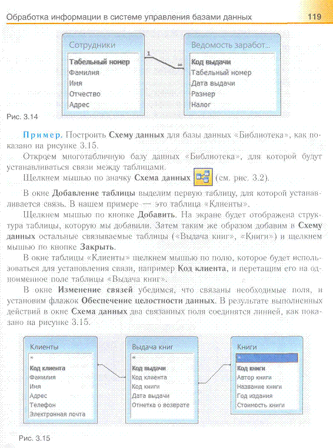
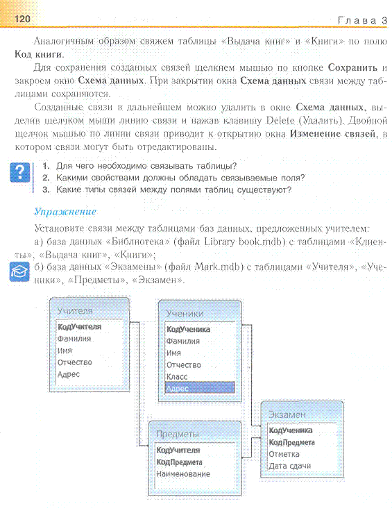

Связывание таблиц базы данных
Практическая работа "Связывание таблиц базы данных"
-
В разделе На проверку/СУБД создайте базу 11Ф_NN_DB_3.accdb.
- База должна содержать таблицы как показано в упр. 3 на стр. 116.
Обратите внимание: поля таблиц Учителя:КодУчителя, Ученики:КодУченика и Предметы:КодПредмета имеют тип "Счетчик".
Поля Предметы:КодУчителя, Экзамен:КодУченика и Экзамен:КодПредмета имеют тип "Числовой".
| Таблица "Учителя" |
| Имя поля | Тип данных |
| КодУчителя | Счетчик (ключевое поле) |
| Фамилия | Текстовый |
| Имя | Текстовый |
| Отчество | Текстовый |
| Адрес | Текстовый |
| Таблица "Ученики" |
| Имя поля | Тип данных |
| КодУченика | Счетчик (ключевое поле) |
| Фамилия | Текстовый |
| Имя | Текстовый |
| Отчество | Текстовый |
| Класс | Текстовый |
| Таблица "Предметы" |
| Имя поля | Тип данных |
| КодПредмета | Счетчик (ключевое поле) |
| КодУчителя | Числовой (Длинное целое) |
| Наименование | Текстовый |
| Таблица "Экзамен" |
| Имя поля | Тип данных |
| КодУченика | Числовой (Длинное целое) |
| КодПредмета | Числовой (Длинное целое) |
| Отметка | Числовой (целый) |
| Дата сдачи | Дата |
| Для поля "Отметка" в свойствах поля найдите подходящую строку и добавьте условие на значение отметки: 0≤ Отметка ≤10 |
- Создайте формы для работы с каждой из таблиц.
- Свяжите таблицы между собой как показано в упражнении на стр. 120:

-
Связывание таблиц описано в учебнике на стр. 121-123. Для тех, кто забыл учебник:




- Измените форму Экзамен: поля КодУченика и КодПредмета сделайте полями со списком (Краткая справка или Подробная справка
).
- Измените форму Предметы: поле КодУчителя сделайте полем со списком.
- С помощью форм (и только форм!!!) внесите в каждую таблицу минимум одну запись.
|